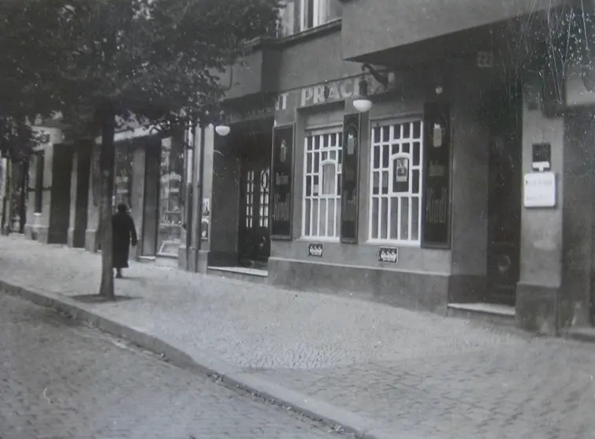
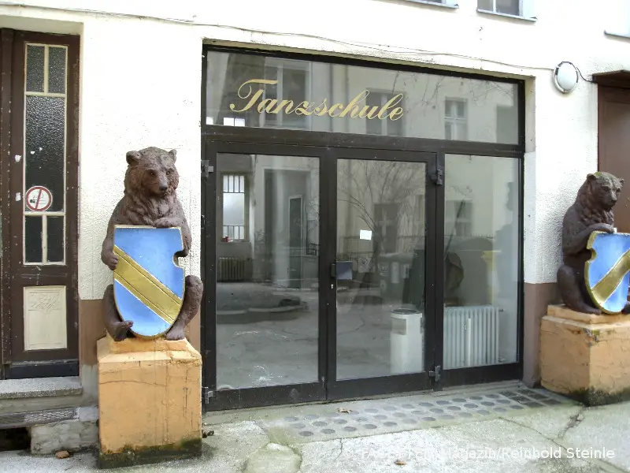
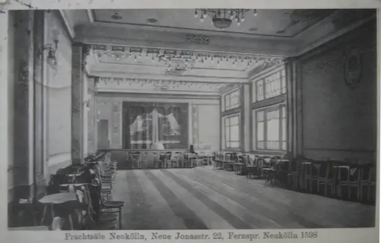

\n
\n Welcome to Prachtsaal, a living, breathing engine of collective creativity built on two interconnected pillars. One empowers our resident artists, whose work sparks, mutates, and cross-pollinates within the space. The other opens the doors to the public, transforming the studio into a playground of expression, experimentation, and shared knowledge. Our mission is to cultivate the balance between play and purpose, movement and reflection, sound and silence. We welcome everyone driven by curiosity, openness, and the hunger to explore. As a non-profit cooperative, we're here to challenge conventions and co-create a space where art doesn't just exist: it unfolds, provokes, and connects.
Join us at Prachtsaal—where creation is a process, not a product, and every day invites fresh connections between people, ideas, and worlds.
At Prachtsaal, we are committed to:
To bring this vision to life, we:
We’re in the process of becoming a registered non-profit cooperative (gemeinnützige Genossenschaft). This is a pivotal move that will deepen our commitment to collective action and artistic experimentation. What began with ateliers and daily practice is evolving into a full-spectrum platform: concerts, performances, exhibitions, workshops, and a rotating gallery. This transformation isn’t about growth for its own sake. It’s about making room for activity, ideas, use, and joy.
Let’s reimagine the architecture of art and community together!

Prachtsaal started as a Tanzschule founded by Emil August and Olga Meisel just after World War I, back when inflation was so out of control that a single lesson cost 4.2 billion Marks. Around 1920, the school moved to its current address. Later, the couple’s sons stepped in and expanded the family business.
Towards the end of the war, it was Inge Meisel-Karras, the founders’ granddaughter, who took over with fierce dedication under the close and strict supervision of her grandparents. She famously never wore the same dress twice to class, learned English dance terminology so she could train American soldiers, and was possibly the first in Berlin to introduce Rock ’n Roll in a formal setting. Inge married Günther Karras, who worked alongside her at the school, and in the 1950s they made history as the first couple to appear on German television as dance instructors.
Through the decades, the space passed through many hands: in 1965, the Tanzsportabteilung Weiss-Gold-Casino got its start and called the Prachtsaal home for nearly three decades, right inside the Tanzschule Meisel-Karras. Then, in 1980, the Meisel-Karras couple retired and handed the reins over to one of their former students, Rita Beck. Come the 1990s, the school changed hands again, this time to Tanzschule Dieter Keller, with Monika Keller taking the lead.

Another chapter unfolded when Dan Lahav, a Holocaust survivor’s son and theatre-maker, chose Prachtsaal as the home for Berlin’s first post-war Jewish theatre. Lahav, born in poverty in Haifa, raised by a grandmother who sang him German arias, had fought in the Yom Kippur war before studying theatre with Marcel Marceau and moving to Berlin. For him, Prachtsaal represented a deliberate site of cultural haunting and reclamation. His productions mingled Orthodox and liberal Jewish voices, Klezmer music, and the ghosts of his murdered family.
When Lahav died in 2016, his tombstone in Weissensee read: “He did not die of boredom.” It’s hard to imagine a better epitaph for a man, or a building, that has been so intimately intertwined with Berlin’s rhythm—sometimes elegant, sometimes hard, never dull.

Today, Prachtsaal holds all those stories without getting stuck in the past. It’s a space shaped by people who keep showing up, evolving it, and making sure it stays alive and relevant.
References:
{
"config": {
"base_url": "https://prachtsaal.berlin",
"mode": "build",
"title": "Prachtsaal Studio",
"description": null,
"languages": {},
"default_language": "en",
"generate_feed": false,
"generate_feeds": false,
"feed_filenames": [
"atom.xml"
],
"taxonomies": [],
"author": null,
"build_search_index": true,
"extra": {},
"markdown": {
"highlighting": null,
"render_emoji": false,
"external_links_class": null,
"external_links_target_blank": false,
"external_links_no_follow": false,
"external_links_no_referrer": false,
"external_links_external": true,
"smart_punctuation": false,
"definition_list": false,
"bottom_footnotes": false,
"lazy_async_image": false,
"insert_anchor_links": "none",
"github_alerts": false
},
"search": {
"index_format": "elasticlunr_javascript"
},
"generate_sitemap": true,
"generate_robots_txt": true,
"exclude_paginated_pages_in_sitemap": "none"
},
"current_path": "/about/",
"current_url": "https://prachtsaal.berlin/about/",
"lang": "en",
"page": {
"relative_path": "about/index.md",
"colocated_path": "about/",
"content": "Who are we?
\nWelcome to Prachtsaal, a living, breathing engine of collective creativity built on two interconnected pillars. One empowers our resident artists, whose work sparks, mutates, and cross-pollinates within the space. The other opens the doors to the public, transforming the studio into a playground of expression, experimentation, and shared knowledge. Our mission is to cultivate the balance between play and purpose, movement and reflection, sound and silence. We welcome everyone driven by curiosity, openness, and the hunger to explore. As a non-profit cooperative, we're here to challenge conventions and co-create a space where art doesn't just exist: it unfolds, provokes, and connects.
\nJoin us at Prachtsaal—where creation is a process, not a product, and every day invites fresh connections between people, ideas, and worlds.
\nOur mission
\nAt Prachtsaal, we are committed to:
\nTo bring this vision to life, we:
\nWe’re in the process of becoming a registered non-profit cooperative (gemeinnützige Genossenschaft). This is a pivotal move that will deepen our commitment to collective action and artistic experimentation. What began with ateliers and daily practice is evolving into a full-spectrum platform: concerts, performances, exhibitions, workshops, and a rotating gallery. This transformation isn’t about growth for its own sake. It’s about making room for activity, ideas, use, and joy.
\nLet’s reimagine the architecture of art and community together!
\n\n Prachtsaal started as a Tanzschule founded by Emil August and Olga Meisel just after World War I, back when inflation was so out of control that a single lesson cost 4.2 billion Marks. Around 1920, the school moved to its current address. Later, the couple’s sons stepped in and expanded the family business.
\nTowards the end of the war, it was Inge Meisel-Karras, the founders’ granddaughter, who took over with fierce dedication under the close and strict supervision of her grandparents. She famously never wore the same dress twice to class, learned English dance terminology so she could train American soldiers, and was possibly the first in Berlin to introduce Rock ’n Roll in a formal setting. Inge married Günther Karras, who worked alongside her at the school, and in the 1950s they made history as the first couple to appear on German television as dance instructors.
\nThrough the decades, the space passed through many hands: in 1965, the Tanzsportabteilung Weiss-Gold-Casino got its start and called the Prachtsaal home for nearly three decades, right inside the Tanzschule Meisel-Karras. Then, in 1980, the Meisel-Karras couple retired and handed the reins over to one of their former students, Rita Beck. Come the 1990s, the school changed hands again, this time to Tanzschule Dieter Keller, with Monika Keller taking the lead.
\n \n
\n Another chapter unfolded when Dan Lahav, a Holocaust survivor’s son and theatre-maker, chose Prachtsaal as the home for Berlin’s first post-war Jewish theatre. Lahav, born in poverty in Haifa, raised by a grandmother who sang him German arias, had fought in the Yom Kippur war before studying theatre with Marcel Marceau and moving to Berlin. For him, Prachtsaal represented a deliberate site of cultural haunting and reclamation. His productions mingled Orthodox and liberal Jewish voices, Klezmer music, and the ghosts of his murdered family.
\nWhen Lahav died in 2016, his tombstone in Weissensee read: “He did not die of boredom.” It’s hard to imagine a better epitaph for a man, or a building, that has been so intimately intertwined with Berlin’s rhythm—sometimes elegant, sometimes hard, never dull.
\n \n
\n Today, Prachtsaal holds all those stories without getting stuck in the past. It’s a space shaped by people who keep showing up, evolving it, and making sure it stays alive and relevant.
\nReferences:
\n\n", "permalink": "https://prachtsaal.berlin/about/", "slug": "about", "ancestors": [ "_index.md" ], "title": "about us", "description": null, "updated": null, "date": null, "year": null, "month": null, "day": null, "taxonomies": {}, "authors": [], "extra": {}, "path": "/about/", "components": [ "about" ], "summary": null, "toc": [ { "level": 2, "id": "who-are-we", "permalink": "https://prachtsaal.berlin/about/#who-are-we", "title": "Who are we?", "children": [] }, { "level": 2, "id": "our-mission", "permalink": "https://prachtsaal.berlin/about/#our-mission", "title": "Our mission", "children": [] }, { "level": 2, "id": "how-are-we-achieving-our-goals", "permalink": "https://prachtsaal.berlin/about/#how-are-we-achieving-our-goals", "title": "How are we achieving our goals", "children": [] }, { "level": 2, "id": "prachtsaal-a-cooperative-in-the-making", "permalink": "https://prachtsaal.berlin/about/#prachtsaal-a-cooperative-in-the-making", "title": "Prachtsaal: A Cooperative in the Making", "children": [] }, { "level": 2, "id": "a-living-history-the-soul-of-prachtsaal", "permalink": "https://prachtsaal.berlin/about/#a-living-history-the-soul-of-prachtsaal", "title": "A Living History: The Soul of Prachtsaal", "children": [] } ], "word_count": 836, "reading_time": 5, "assets": [ "/about/prachtsaal-dancehall.webp", "/about/prachtsaal-streetview.webp", "/about/tanzschule.webp" ], "draft": false, "lang": "en", "lower": null, "higher": null, "translations": [], "backlinks": [] }, "zola_version": "0.21.0" }